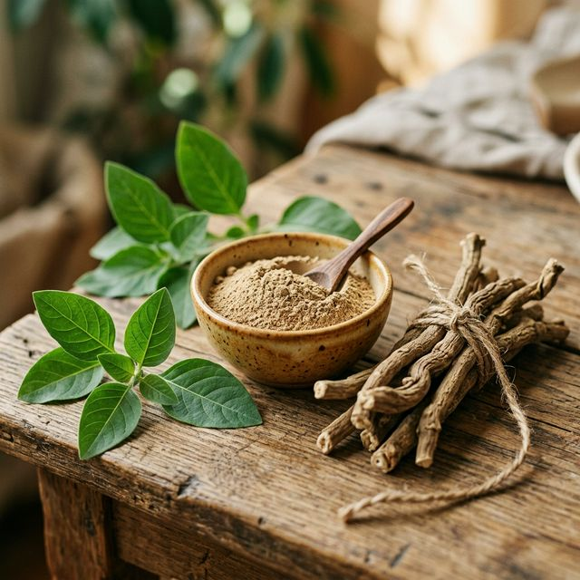

L'ashwagandha (Withania somnifera), aussi appelée "ginseng indien", est sans doute l'adaptogène le plus étudié et le plus populaire au monde. Utilisée depuis plus de 3 000 ans en médecine ayurvédique, cette plante fait l'objet d'un engouement scientifique sans précédent grâce à ses effets remarquables sur le stress, le sommeil et les performances physiques.
💡 En bref
L'ashwagandha peut réduire le cortisol de 30%, améliorer le sommeil de 72% et augmenter la force musculaire de 18% selon les études cliniques. C'est l'un des rares adaptogènes dont l'efficacité est soutenue par des dizaines d'essais contrôlés randomisés.
Qu'est-ce que l'ashwagandha ?
L'ashwagandha est un petit arbuste originaire d'Inde, du Moyen-Orient et de certaines régions d'Afrique. Son nom signifie "odeur du cheval" en sanskrit, faisant référence à la fois à l'odeur distinctive de sa racine et à la force qu'elle confère traditionnellement.
La plante contient des composés bioactifs appelés withanolides, responsables de la majorité de ses effets thérapeutiques. Les extraits standardisés modernes, comme le KSM-66® et le Sensoril®, sont concentrés pour contenir un pourcentage précis de withanolides, garantissant une efficacité constante.
Les bienfaits prouvés de l'ashwagandha
1. Réduction du stress et de l'anxiété
C'est le bienfait le plus documenté de l'ashwagandha. Une méta-analyse de 2024 regroupant 12 essais cliniques a confirmé que l'ashwagandha réduit significativement les niveaux de cortisol (l'hormone du stress) de 23 à 30% par rapport au placebo.
L'étude de Chandrasekhar et al. (2012) a montré qu'une dose de 300 mg d'extrait KSM-66, deux fois par jour pendant 60 jours, réduisait les scores de stress perçu de 44% chez des adultes souffrant de stress chronique.
2. Amélioration du sommeil
Plusieurs études montrent que l'ashwagandha améliore significativement la qualité du sommeil. Une étude de 2019 publiée dans Cureus a démontré une amélioration de 72% de la qualité du sommeil chez des participants prenant 600 mg d'extrait de racine pendant 10 semaines.
L'ashwagandha augmente les niveaux de GABA, un neurotransmetteur inhibiteur qui favorise la relaxation et l'endormissement.
3. Performance physique et masse musculaire
L'ashwagandha a montré des résultats impressionnants pour la performance sportive. Une étude de 2015 publiée dans le Journal of the International Society of Sports Nutrition a révélé que les participants prenant 600 mg d'extrait KSM-66 pendant 8 semaines ont connu :
- Une augmentation de la force musculaire de 18% au développé couché
- Une augmentation de la taille musculaire de 9%
- Une réduction du pourcentage de graisse corporelle
- Une récupération musculaire accélérée post-exercice
4. Fonction cognitive
L'ashwagandha améliore la mémoire, le temps de réaction et les performances cognitives. Une étude de 2017 a montré une amélioration significative de la mémoire de travail, de la vitesse de traitement de l'information et de l'attention après 8 semaines de supplémentation.
5. Équilibre hormonal
Chez les hommes, l'ashwagandha peut augmenter les niveaux de testostérone de 15-17% et améliorer la qualité du sperme. Chez les femmes, elle aide à réguler les hormones thyroïdiennes et peut améliorer les symptômes liés au déséquilibre hormonal.
Dosage recommandé
📋 Dosage optimal
300 à 600 mg par jour d'extrait standardisé (KSM-66 ou Sensoril), réparti en 1-2 prises. Commencez par 300 mg/jour et augmentez progressivement. Prenez-le le soir pour les effets sur le sommeil, ou le matin pour l'énergie.
Top 5 des meilleurs compléments d'ashwagandha en 2026
Voici notre sélection des meilleurs compléments d'ashwagandha, testés et comparés selon la qualité de l'extrait, le dosage, la pureté et le rapport qualité-prix.
| Produit | Extrait | Dosage | Note | Prix | Lien |
|---|---|---|---|---|---|
| Nutri&Co Ashwagandha KSM-66 | KSM-66® (5% withanolides) | 600 mg | ⭐ 4.8/5 | 22,90€ | Voir sur Amazon |
| Natural Elements Ashwagandha | KSM-66® (5% withanolides) | 500 mg | ⭐ 4.7/5 | 19,99€ | Voir sur Amazon |
| Hivital Ashwagandha Bio | Sensoril® (10% withanolides) | 600 mg | ⭐ 4.6/5 | 17,90€ | Voir sur Amazon |
| WeightWorld Ashwagandha | Extrait 10:1 | 1000 mg | ⭐ 4.5/5 | 15,99€ | Voir sur Amazon |
| Aavalabs Ashwagandha+ | KSM-66® + poivre noir | 500 mg | ⭐ 4.5/5 | 24,99€ | Voir sur Amazon |
Effets secondaires et précautions
L'ashwagandha est généralement bien tolérée aux doses recommandées. Cependant, quelques précautions s'imposent :
- Grossesse et allaitement : déconseillé (manque de données de sécurité)
- Troubles thyroïdiens : l'ashwagandha peut stimuler la thyroïde — consultez votre médecin
- Médicaments : peut interagir avec les sédatifs, immunosuppresseurs et hormones thyroïdiennes
- Effets digestifs : certaines personnes peuvent ressentir des troubles gastro-intestinaux légers
⚕️ Avis médical
Consultez toujours votre médecin avant de commencer une supplémentation, surtout si vous prenez des médicaments ou souffrez d'une condition médicale. Les informations de cet article sont à but éducatif et ne remplacent pas un avis médical.
Conclusion
L'ashwagandha est un adaptogène puissant dont l'efficacité est soutenue par une base solide de preuves scientifiques. Que vous cherchiez à réduire votre stress, améliorer votre sommeil, ou booster vos performances, l'ashwagandha offre une solution naturelle, sûre et accessible.
Pour des résultats optimaux, optez pour un extrait standardisé (KSM-66 ou Sensoril), respectez le dosage de 300-600 mg/jour, et laissez au moins 4-8 semaines pour observer les effets complets.